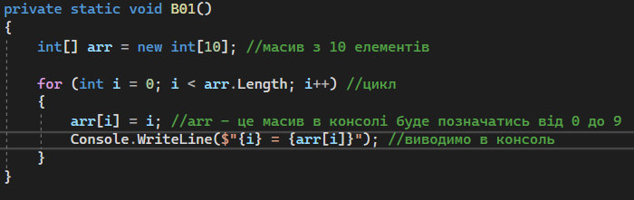
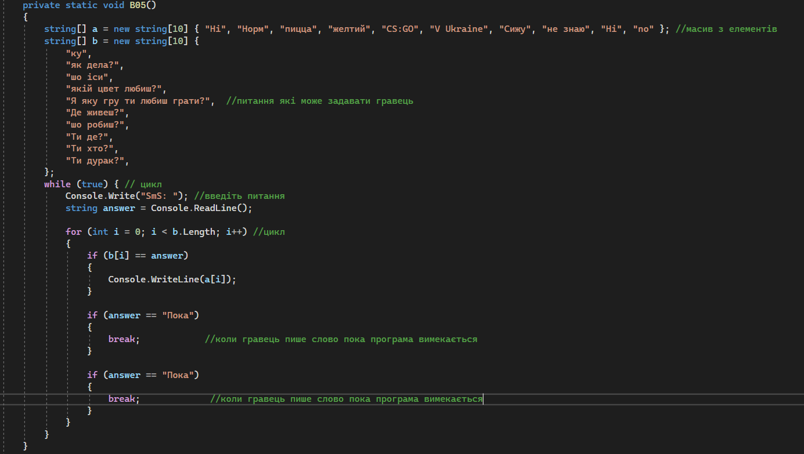

<
Завдання 1
Створити массив з 10 элементів та заповнити його за допомогою циклу, числами від 0 до 9.

Завдання 2
Створюємо чат бота, відповідаючого на питання, за допомогою двох массивів текстового типу однакової
довжини, перший для запитань, другий для відповідей бота, заповнюємо массиви питаннями та відповідями,
та за допомогою циклу шукаємо яке з доступних питань задав користувач, та виводимо відповідь з тим-же індексом.
